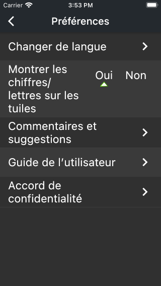
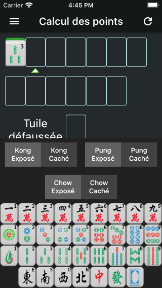

« Mah-Jong Bible » est une application iOS/Android basée sur la version 2014 des « Règles de compétition du Mah-Jong », publiées par la World Mahjong Organization. La version 2.6.0 inclut le comptage des points et l’apprentissage du Mah-Jong. D’autres fonctionnalités seront progressivement ajoutées dans les prochaines versions.
Lien de téléchargement de l'App Store:
App Store
L’application propose 5 langues : Chinois simplifié et traditionnel, Anglais, Japonais et Français. Par défaut, elle choisira celle qui correspond le mieux à la configuration de votre appareil. Si vous souhaitez changer de langue, appuyez sur le bouton ≡ au sommet à gauche de l’écran, puis sur « Préférences », « Changer de langue » et sélectionnez la langue dans la liste affichée, comme illustré ci-dessous.
Pour saisir les tuiles de votre main, sélectionnez l’emplacement de la tuile au sommet de l’écran (un triangle s’affichera au-dessous). Utilisez ensuite le clavier de tuiles situé au bas de l’écran, comme illustré ci-dessous.
Pour saisir un Kong, un Pung ou un Chow, caché ou exposé, saisir la première tuile puis, au-dessus du clavier, appuyez sur le bouton de la combinaison choisie. Exemple 1 : pour saisir un Kong de 3 Bambous, choisir son emplacement dans la main au sommet de l’écran, appuyez sur la tuile « 3 Bambous » du clavier puis sur « Kong Caché ». Exemple 2 : pour saisir un Chow de 3, 4, 5 Caractères, choisir son emplacement, appuyez sur la tuile « 3 Caractères » du clavier puis sur « Chow Exposé » et les caractères 4 et 5 seront automatiquement ajoutés, comme illustré ci-dessous.
Veuillez noter que, dans des cas spéciaux, certains boutons ne s’affichent pas. Par exemple, si vous saisissez une tuile d’Honneur, comme il est impossible de saisir un Chow d’Honneurs (Vent d’Est, Sud, Ouest, Nord, Dragon Blanc, Rouge, Vert), les boutons « Chow Exposé » et « Chow Caché » n’apparaissent pas.
Lorsque vous avez saisi toutes les tuiles de votre main, appuyez sur le bouton « Calculer » et l’application affichera le résultat. En cas d’erreur, un message vous donnera quelques explications.
Au-dessous du bouton « Calculer », vous pouvez saisir des informations complémentaires, comme par exemple « Tirer Soi-Même », « Dernière Tuile de la Donne », « Vent Dominant », « Vent du Joueur », etc.
Appuyez sur le bouton ≡ au sommet à gauche de l’écran pour afficher le menu, puis sur « Les figures ». Les figures sont groupées par nombre de points. Les groupes sont triés par nombre de points décroissant. La colonne de droite permet de se déplacer rapidement à un nombre précis. Cliquez sur une figure pour afficher sa description ainsi que les exemples.
Appuyez sur le bouton ≡ au sommet à gauche de l’écran, puis sur « Préférences » et « Commentaires et suggestions » pour me transmettre vos réactions. Je serai ravi de vous lire et de vous répondre. Merci pour votre collaboration !
Concepteur de l’application : 李朴之 (Puzhi Li)